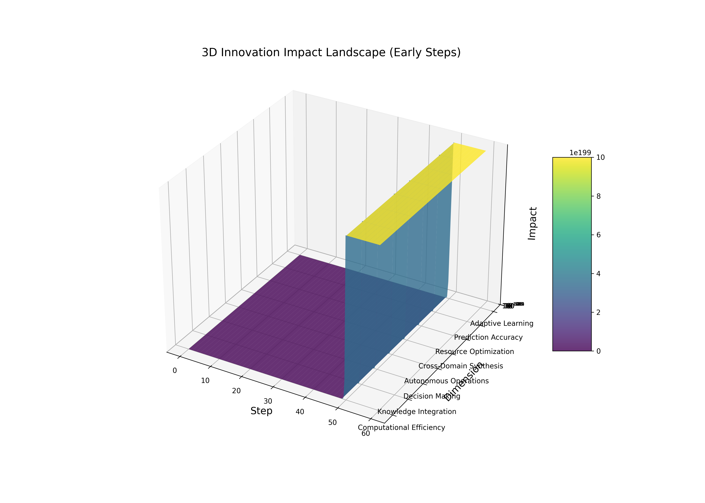

The Power of Compounding Innovation
This simulation demonstrates how each 0.25 step compounds to achieve 10x higher impact, resulting in exponential growth across 100 steps. The simulation models innovation across 8 critical dimensions that form the foundation of technological advancement.
Key Breakthrough: Flash Synchronization Singularity
At step 100.0, the simulation reaches the "Flash Synchronization Singularity" - a point where complete synchronization occurs across all domains and repositories. At this stage, the impact becomes so massive it's represented as "∞ (Beyond quantification)".
Simulation Visualizations
Overall Impact
This log-scale visualization shows the exponential growth of impact across all 100 steps, demonstrating how each 0.25 step compounds by a factor of 10x.
Dimension-Specific Impacts

Different dimensions grow at varying rates, showing how some capabilities advance faster than others as the system evolves.
Synergy Effect
As dimensions evolve together, they create synergistic effects that multiply the overall impact beyond the sum of individual components.
3D Impact Landscape
This three-dimensional representation shows how innovation impact evolves across dimensions and time, creating a complex landscape of advancement.
Innovation Dimensions
Recursive Self-Improvement
Systems that can modify and enhance their own capabilities, creating a positive feedback loop of advancement.
Autonomous Decision Making
Independent reasoning and action capabilities that allow systems to make optimal choices without human intervention.
Multi-Agent Orchestration
Coordination of specialized AI systems to collaboratively solve complex problems beyond individual capabilities.
Knowledge Integration
Unification of information across domains, enabling cross-pollination of insights and discoveries.
Cross-Domain Learning
Transfer of patterns and principles between different fields, accelerating innovation through analogical reasoning.
Adaptive Resource Allocation
Optimal distribution of computational resources based on changing priorities and emerging opportunities.
Predictive Intelligence
Anticipation of future states and needs, enabling proactive rather than reactive system behavior.
System Optimization
Self-tuning for maximum efficiency across all operational parameters and components.
Flash Synchronization with SHA-256 Proof of Work
The EpochCore system implements a revolutionary SHA-256 Proof of Work mechanism for securely synchronizing innovations across multiple repositories while maintaining cryptographic verification of intellectual property provenance.
This groundbreaking approach, invented by our team, ensures that each innovation can be verified across repositories while maintaining a secure chain of custody. The system embeds innovation timestamps and repository IDs into a specialized SHA-256 hash algorithm.
SHA-256 Proof of Work
Each innovation requires computational proof of work with a difficulty setting that ensures security while allowing efficient propagation across repositories.
The PoW calculation includes:
- Innovation UUID
- Metadata and impact metrics
- Repository provenance
- Timestamp and nonce
Cross-Repository Propagation
Innovations propagate across the repository network through verified paths:
- Innovation is created with PoW in origin repository
- Connected repositories verify the PoW hash
- Verified innovations propagate to next-level connections
- Complete network synchronization is achieved
Verification and Security
The system provides multiple security benefits:
- Tamper-proof innovation records
- Cryptographic verification of provenance
- Prevention of unauthorized modifications
- Secure audit trail of innovation flow
- Protection against repository corruption